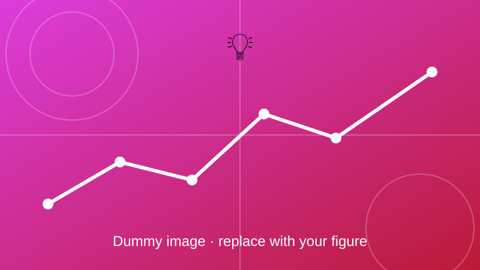

4 × 4 LED Cube
A 64-LED cube driven by an Arduino using multiplexing.

Overview
A 4 × 4 × 4 LED cube built from 64 LEDs and controlled by an Arduino. Multiplexing lets one controller drive all the LEDs with only a few pins, and PWM signals set the brightness for animations.
Objectives
- Drive 64 LEDs with as few pins as possible.
- Use PWM for brightness control.
- Store LED states in arrays and loops to create animations.
Method and key equations
Only one layer is lit at a time. The layers are switched on in turn so quickly that the eye sees all of them lit at once.
An \(N\times N\times N\) cube needs \(N^2\) column pins plus \(N\) layer pins, so 20 pins for \(N=4\) instead of 64.
Each layer is on for a fraction \(D\) of the cycle, so the average current is the peak current times \(D\).
Series resistor for each LED, from the supply voltage \(V_s\), LED forward voltage \(V_f\) and wanted current \(I_F\).
Demo
Outcome
Add your results here: key findings, figures, and links to the related paper or code.